Tuesday
Today once I finished byteing off more than I can chew I played some Spikeball over in The Panhandle. I’ve gotten much better at not just returning the ball the second it comes and actually passing to my teammate which is good. Now by default when I get the second touch on a receive I hit it back to my teammate for a third touch which I would have had problems with in the past.
Wednesday
Originally after I finished Cursoring like a sailor I was gonna go to Midnight Runners but it was really hot out so I decided not to. I regret this now because “The Thunder from down under” went and he said it was quite nice and things had cooled down.
I went to try slack lining over in Panhandle but found everyone there to be way out of my league. Usually when I go to Spikeball on Tuesdays there is a slack line for people to try and I thought going to a whole group of slack lines could be a fun change of pace but I found all the lines to be way above my pay grade (pun very much intended).
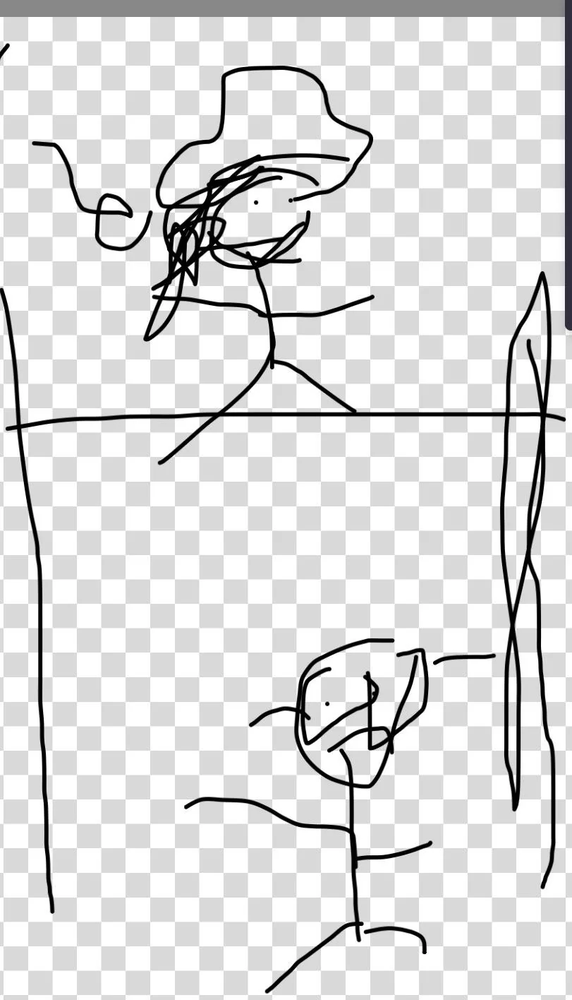
Instead I decided to go for an evening stroll through GGP which was quite nice.
Thursday
After I finished my stint in the bisect mines I walked over to bar night.
On my way there I was overcome with a rush of nostalgia. The fact that “The Quant” will be moving away soon really got me reminiscing on how life has changed since 2023. Back then I mainly hung out with “The Quant,” “The Plower,” “The Taco,” and “The Professor”. We would spend a lot of time playing board games, going to movies, and generally doing pretty introvert coded activities. Now that group which used to be my closest group of friends is one I hardly see anymore except for “The Quant” and with him moving away it really feels like I’m saying goodbye to an old stage of my life. This is compounded with the fact that I plan to stop doing trash pickup. I got the feeling that I will soon be entering a new phase of life. I’m not exactly sure what it will be but I had this gut feeling that change of some sort is looming. Nothing I can do but embrace it fully and plunge into the new horizons of life! There’s a video game I used to play called Sly 3 Honor Among thieves whose menu music I listened to on this walk that does a great job for a kids video game on moving on from the past and letting go of what used to be. It really helped me think of all the changes big and small that have happened.
Somewhat ironically the walk where I realized my life was changing ended at a bar where nothing ever changes. “The Philosopher” aptly noted that this is a bar where locals come and the same people who come here have come for years and will come for many more. I took one look inside and didn’t quite feel myself ready to go in yet and wanted to consolidate my thoughts before entering.
Upon entering I see “The Bartender” and “The Twitch Streamer” watching a game of the 49ers vs The Rams happening in Australia. Apparently they’re trying to increase the global reach of American football and have a game there which seems wild to me. On top of that the Jonas Brothers did the half time show there which was quite funny.
Later on, “The Mosher,” “The Awepartment,” and “The Philosopher” come by and we hang out for a while.
“The Mosher” told me the startup he is at is close to breaking even so in an effort to do my part
Apparently “The Philosopher” drank a gallon of milk as part of some work event and so me and “The Awepartment” thought it would be funny to replace one of his drinks with milk. I asked “The Twitch Streamer” to go get a glass of milk which he thought I wanted because “It’s Humza being Humza” and he did. “The Philosopher” wasn’t too keen to drink more milk but he powered through and me and "The Awepartment” bought him dinner for it.
Friday
Once I finished turning ito en into inference passes I met up with “The Shadow Brigade” and got burgers at Beep’s burgers. It’s quite a solid burger place and I wanted to show it to her during her visit here.
As we ate I came to the realization that this may be the last time she is here before “The Quant” moves which is especially bad since she and I are the two founding members of “The Quant’s” fan club. Immediately I called “The Quant” asking him if he was free to meet and we high tailed it over to Powell to meet up with him. At the same time she said I can’t just keep talking about “The Awepartment’s” apartment without showing it to her so I asked "The Awepartment” what he was up to and he said he was having some people over for dinner and that we could come so we all headed over to his place.
We went over there and hung out for a while with “The Awepartment,” “Generic white guy,” and “Generic white guy’s” girlfriend. There was a plant exchange where “The Awepartment” gave “The Shadow Brigade” a spider plant and “The Shadow Brigade” promised to give “The Awepartment” one of her plants.
Saturday
The day began with trash pickup with "Bleaching to the choir,” “This little piggie didn’t go to the slaughterhouse,” and for the first time since his liver surgery, “The Notetaker”! I learned more about “This little piggie didn’t go to the slaughterhouse’s” job trying to get 30 million from rich Silicon Valley types to get a giant panda from China. Apparently it costs more than 1 million per year in upkeep for those guys which is pretty wild to me.
Sadly I couldn’t stay at trash pickup the whole time today because it was time for VOLO soccer with “The Big YT short,” “The Enabler,” “Always up for a disc-ussion,” “La Taqueria Royalty,” “Breaking it down,” and the rest of our team. So far we’ve been on an upward trend. Our first game we lost 0-11, then we lost, 0-6, this game I was hoping we could continue this progress and only lose 0-3 ;). When I got there my impression wasn’t helped by the fact that the entire team was a bunch of really big guys that all spoke Spanish. I’m pretty confident that speaking Spanish makes you a better soccer player so we were at a disadvantage since we only have one person on our team who speaks Spanish.
Thankfully though this was our best game yet! Shoutout to the guy on our team who scored our first goal of the season! On top of that we did a much better job communicating and strategizing. One mistake I made in the last game as center defender was that I strayed too much from the center going after the ball and left the center wide open a few times. This time I was much more deliberate and made sure I was between my other two defenders and didn’t blindly chase the ball.
Also I made sure to say “Drop” whenever I felt that I needed more help with defense. As center defender I often felt like my main job was to provide pressure and limit options of the offense without necessarily putting my foot on the ball, but I did have a few moments where I got to go up front with the offender and get the ball out from under them which felt great.
In the end the score was 1-4 and while we didn’t win this was definitely our best score yet! Go team PTSD!
Extra thanks to “Tightly knit” and “function(get_rid_of_cancer)” for coming and supporting!
Once we finished the game and had a post game celebration at Palmetto’s superfood (which by the way really slaps), I went to meet up with “The Philosopher” to start shopping for chili night. We started with Costco to get some of the basics, thorough bread for some of the bread based sides, Whole Foods for some finishing things, and finally Gus’s for the banana water (very important!!). One side note here is that Whole Foods disappointingly did not have canned corn because they decided to take it out of circulation so they could rebrand it even though it was selling very well. Why they did this is unknown and lacks even a kernel of logic. Thankfully “The Mosher” came in clutch and got the canned corn along with some other supplies we needed like a can opener which I regrettably don’t have because I don’t have many cans I often need opened.
We got back to my place and started cooking. I was chopping up some onions, thinking back to my knife skills class and remembered to claw grip the onion to make sure the knife went against my skin without cutting when unfortunately I flew too close to the sun and cut my finger. It was really stupid actually, I cut an onion like this to try and get rid of the stem part
I wanted to cut horizontally through the onion to get rid of the stem when I wound up slashing into my right middle finger. I won’t lie here, this part was rough.
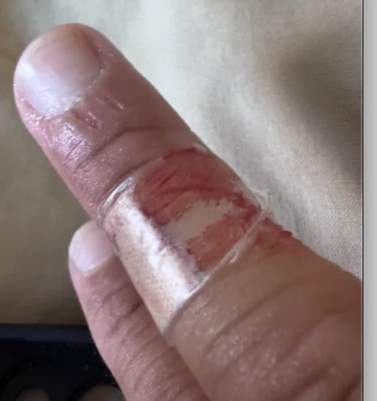
Note this is after multiple rounds of blood coming out all over, getting on a door and generally being quite the eruption. I will note thankfully nothing got in the food even once so that was OK ( I wanted to say that up front).
Unfortunately with how many times the wound kept reopening I didn’t really feel comfortable cutting anything else that day. I still contributed to the chilli by browning the beef and stirring things up but if I’m being honest I didn’t contribute as much as I would have liked due to a mistake I really should have seen coming. I was dumb and I messed up.
Later everyone else started coming over including “The Finer Things,” “The Awepartment,” “Hand in hand,” “The Fisherwoman,” “The Shadow Brigade,” “The Quant,” and a few other folks who don’t have newsletter nicknames. Shoutout to the unnamed friend who brought the Jalapeno poppers. They were a great hit with the members of the armed forces (“The Shadow Brigade”).
“The Shadow Brigade” brought a beer brand that is very popular on the East Coast called Yuengling. I don’t know much about this sort of thing but it’s what the East Coasters amongst us crave apparently. It was a big hit with “The Fisherwoman”.
I did unfortunately catch a few strays for rush ordering a phone case that didn’t quite fit my current phone. I didn’t think people would care too much but I was proven wrong the second I handed my phone to someone else to show them a funny picture. I was immediately shamed into ordering a correctly fitting phone case. This was probably the objectively correct decision but did lead to some cool photos like these
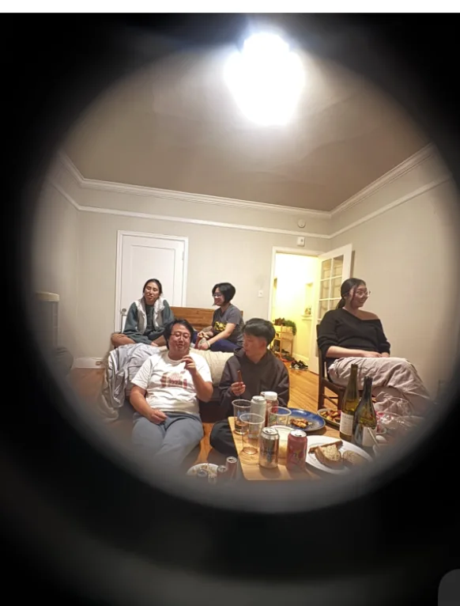
This also led to a joke being made about not being able to properly count how many holes the phone cover needed because I’m a software engineer instead of a mechanical engineer which meant I failed in one of my goals of the night which was to increase the standing of the average software engineers in terms of their ability to host functions and look presentable. I was told attention to detail matters and it occurs to me now that I am worse than average at looking for details in things I’m not inherently interested in which can lead to me being less presentable than I could be. I’m reminded of a famous CEO who once said that a good interview question to ask somebody is “What things are you really bad at and should not be asked to do under any circumstances?” and I realized this is one of them. This is probably the next big problem I broadly need to solve after first impressions, fashion, and cooking.
But again to reiterate overall the chili night went well according to everyone else and I think everyone had a great time as did I while the event was happening. Once everyone left and I went to bed I got hit by a big wave of rumination on how it could have gone better and I was quite annoyed at myself for the phone case thing and the fact that I was stupid enough to cut my finger in a way that left me unable to chop things for the rest of the night. I was ruminating hard and was very displeased with myself going to bed.
Sunday
I woke up feeling better (mostly) and went to trash pickup with “The Notetaker,” “The Yogi,” “The Menace,” “Bleaching to the choir,” “Not Misinformed,” “The Foxy lady,” “The Raja of Rhythm,” and some other folks. I’m at 298 trash pickups now, next week will be my last week of doing trash pickups before I take a sabbatical to find new hobbies to progress on.
I’m glad so many people came out but on the other hand it’s gonna make leaving that much harder :(.
After picking up trash I went home to go see my family. It was good to catch up with everyone and I didn’t get called fat by my Mom which was nice. In fact I actually got lectured less this week by her than by “The Awepartment” which was funny. My Dad made some home cooked daal which I haven’t had in many many years. This dish really takes me back to when I was a child.
While I was home my parents were very keen to ask me my thoughts on all the AI news happening lately with the news coming of Anthropic saying the models may kill us and my Mom saying that AI is making us dumber. Personally I see the point in technology making us less likely to think for ourselves but I countered her with the argument that now at my job I can learn about many more things and build much faster than I used to be able to and can take on problems more ambitiously than I could in the past with the caveat that excessive usage can numb some of my mental sharpness. The question always remains as to what skills you want to keep; with any technology there are always going to be skills we now no longer need to think about. For example, do you want to know the intricacies of hand washing clothes or would you rather outsource that to a washing machine? I think everyone reading this will probably come to the same answer that I did here.
My parents asked if I was ever going to get my drivers license to which I responded that at this point I may as well hold out as I’ve been doing for the last 14 years I could get a license, and if I was ever going to get a condo to which the answer is likely not in the immediate future.
I tried to help my Mom install some wheels on her standing desk only to realize that the wheels that the desk company said would fit did not, which means that the desk company is gonna get an angry call tomorrow which I wouldn’t mind being a fly on the wall to.
Personal training progress for the week
The dot plots below show every exercise logged through 9/10/2026; later dates are excluded. The x-axis is time, the y-axis is logged weight, and dot size represents reps or logged time. Bodyweight sets appear on the BW baseline.


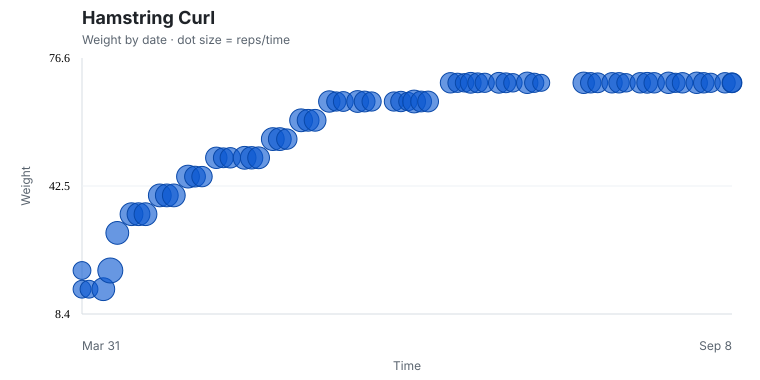

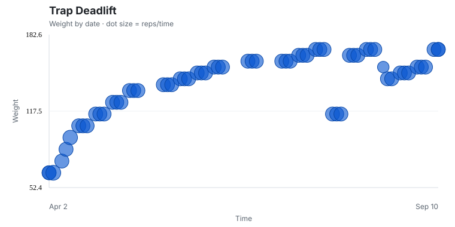


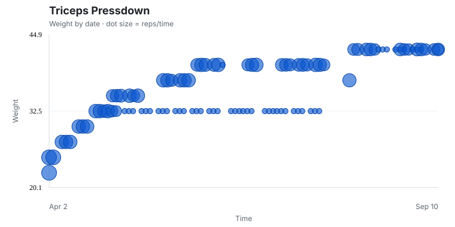
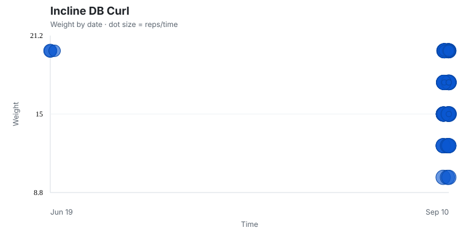
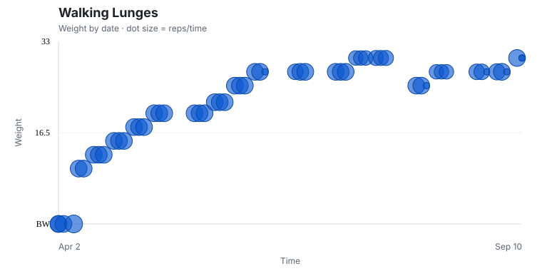
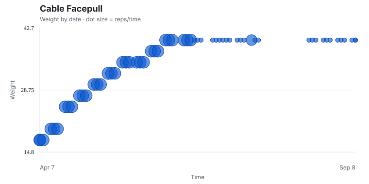
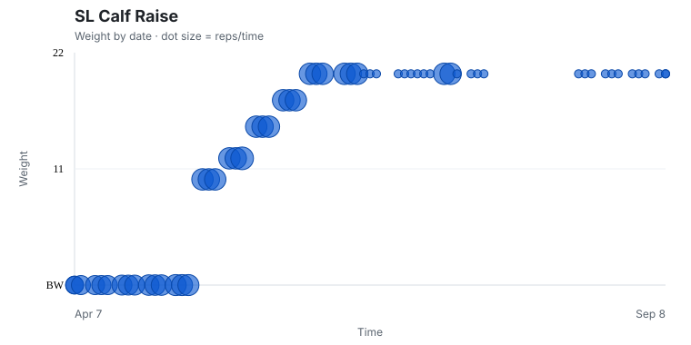
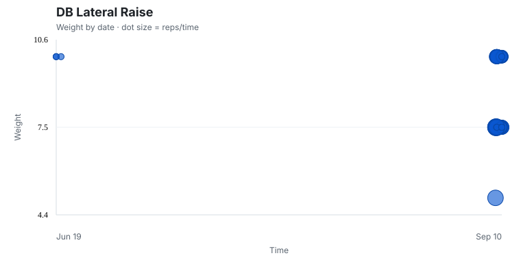


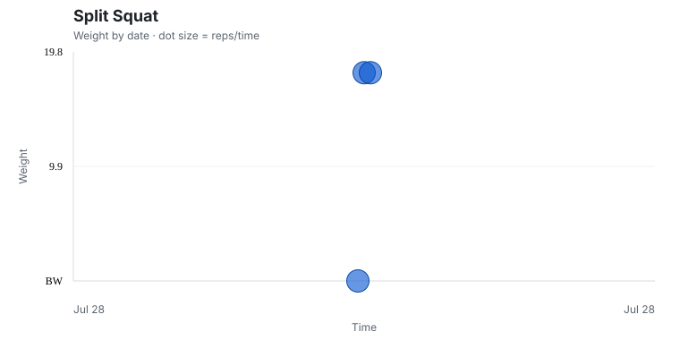
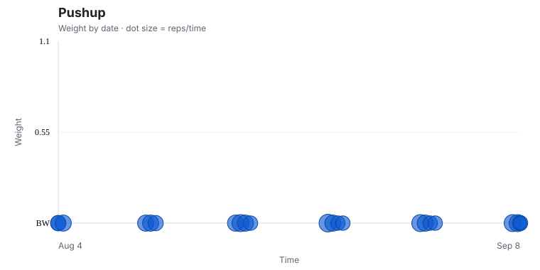
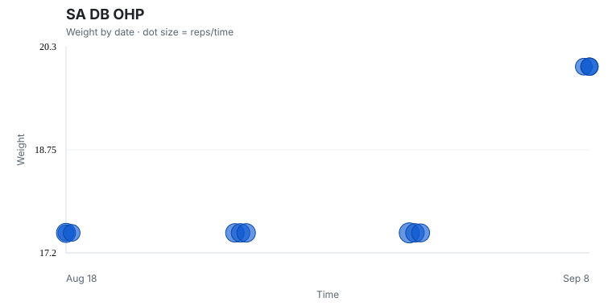
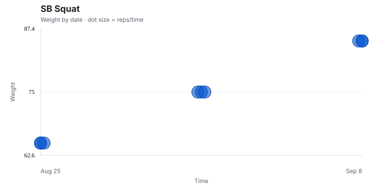

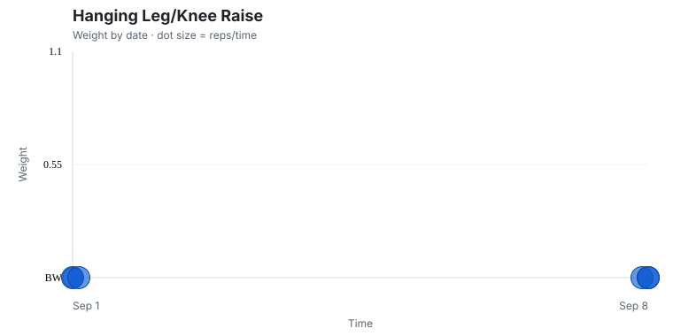
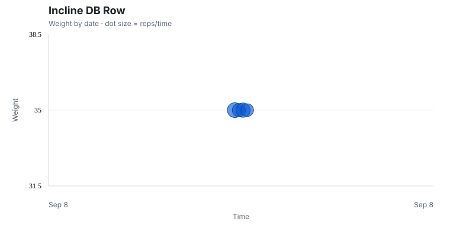
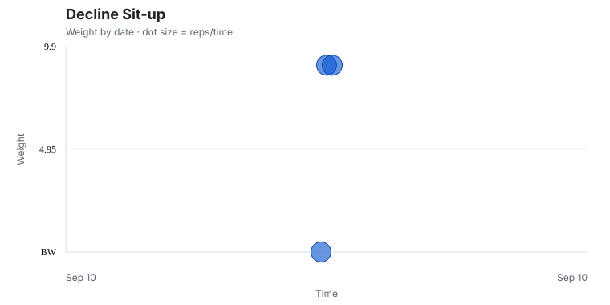